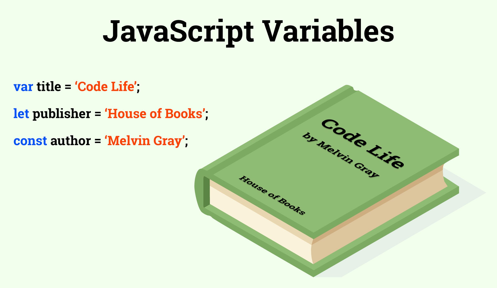

Conocimientos en Javascript

JavaScript es un lenguaje de secuencias de comandos que te permite crear contenido de actualización dinámica, controlar multimedia, animar imágenes y prácticamente todo lo demás.
Se puede decir que JavaScript es más difícil de aprender que tecnologías relacionadas como HTML y CSS. Antes de intentar aprender JavaScript, se recomienda encarecidamente que te familiarices con al menos estas dos tecnologías primero, y quizás también con otras.
Una función en JavaScript es similar a un procedimiento — un conjunto de instrucciones que realiza una tarea o calcula un valor, pero para que un procedimiento califique como función, debe tomar alguna entrada y devolver una salida donde hay alguna relación obvia entre la entrada y la salida.
En JavaScript, los arreglos pueden ser una colección de elementos de cualquier tipo. Esto significa que tú puedes crear un arreglo con elementos de tipo Cadena , Boolean, Número, Objetos, e incluso otros Arreglos
Hay muchos diferentes tipos de bucles, pero esencialmente, todos hacen lo mismo: repiten una acción varias veces. (¡Ten en cuenta que es posible que ese número sea cero!).
| Tipo de declaración | Definición | Sintaxis |
|---|---|---|
| Declaracion for | Un ciclo for se repite hasta que una condición especificada se evalúe como false. |
for ([expresiónInicial]; [expresiónCondicional]; [expresiónDeActualización]) |
| Declaracion do...While | La instrucción do...while se repite hasta que una condición especificada se evalúe como falsa. |
do |
| Declaracion while | Una declaración while ejecuta sus instrucciones siempre que una condición especificada se evalúe como true. |
while (condición) |
| Declaracion break | Usa la instrucción break para terminar un bucle, switch o junto con una declaración etiquetada. Cuando usas break sin una etiqueta, inmediatamente termina el while, do-while, for o switch y transfiere el control a la siguiente declaración. Cuando usas break con una etiqueta, termina la declaración etiquetada especificada. |
break; |
| Declaracion continue | La instrucción continue se puede usar para reiniciar un while, do-while, for, o declaración label. |
continue [label]; |
| Declaracion for...in | La instrucción for...in itera una variable especificada sobre todas las propiedades enumerables de un objeto. Para cada propiedad distinta, JavaScript ejecuta las instrucciones especificadas. |
for (variable in objeto) |
| Declaracion for...of | La declaración for...of crea un bucle que se repite sobre objetos iterables (incluidos Array, Map (en-US), Set, objetos arguments y así sucesivamente), invocando un bucle de iteración personalizado con declaraciones que se ejecutarán para el valor de cada distinta propiedad. |
for (variable of objeto) |
Utiliza variables como nombres simbólicos para valores en tu aplicación. Los nombres de las variables, llamados identificadores, se ajustan a ciertas reglas.
